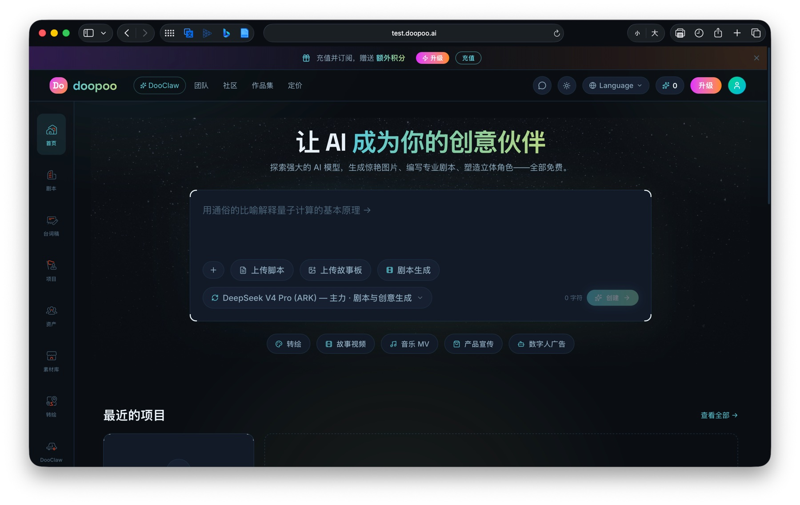

我对“做产品”的理解
你认为产品经理 / 产品岗的核心价值是什么？一个好的产品应该具备哪些特质？可以结合使用过的产品、做过的项目或实习经历来谈。
如果只看分工，研发负责把东西做出来，销售负责把东西卖出去，似乎已经足够。但在真实的产品过程中，这个组合往往会暴露两个缺口：做之前缺少先验，卖之后缺少闭环。
做之前，缺少先验
技术选型、开发周期、交付边界和验收标准，都依赖对需求的准确判断。需求越模糊，试错成本越高；即使在 AI Coding 场景中，Agent 也只有获得足够周全的上下文，才更可能稳定完成任务。
卖之后，缺少闭环
销售掌握客户的一线反馈，但未必能把问题转译成可执行的产品需求；研发则可能接触不到真实用户。产品需要把反馈接住、判断优先级，再推动迭代回到用户与商业结果中。
Feedback loop
在成熟 ToB 产品中，产品更像闭环的推动者

Case study
DooPoo AI 漫剧出海项目：一次关于边界的复盘
客户希望获得一套更贴合自身工作流、成本更低的 AI 漫剧生产方案。但项目立项时，需求、交付边界和技术选型都没有充分对齐；为了促成合作，承诺范围不断扩大，最终开发周期与交付质量都无法匹配预期，也失去了最初的客户。
需求蔓延、周期失控、交付质量不稳定。
销售、产品与研发没有围绕真实需求和验收标准达成一致。
产品要敢于定义边界，并让价值、成本与可交付性在立项前被看见。
Judgement
需求是及格线，判断才决定产品的上限
接收需求并不难；在不考虑成本的情况下，绝大多数需求都可以被满足。真正困难的是区分短期诉求与长期价值，并在资源有限时做出取舍。
所以，我理解的好产品，是在用户价值、商业价值与成本之间持续判断，把有限资源投入到最真实、最值得解决的需求上。
我对安全领域的想法
谈谈你对网络安全 / 信息安全行业的认知。可以是行业趋势、某类安全产品、某个安全事件，也可以是对安全产品商业化的看法。
网络与信息安全通常覆盖事前预防、事中检测和事后响应三个环节。但无论产品位于哪一环，都绕不开一个经典矛盾：Security vs. Usability。限制越多，表面上越安全，业务摩擦也往往越大。
身份与权限、设备与终端安全、数据保护。
UEBA、DLP、Insider Risk 等异常识别。
日志、审计、溯源和安全运营闭环。
Risk model
“管得准”比“管得严”更接近安全的本质
同样是信息外传，一张低价值聊天截图与一份核心机密数据的后果完全不同。只看“是否泄漏”会把所有事件一视同仁；只有把概率与影响放在一起判断，安全策略才可能既保护关键资产，又避免给正常业务制造不必要的阻力。
Two shifts
我关注的两个行业变化
安全边界正在模糊
互联网、SaaS、云与远程办公交织后，传统“守住内网”的静态边界越来越难成立。安全产品需要从一刀切的访问限制，转向基于身份、终端、数据与行为的动态风险判断。
AI 成为新的风险主体
AI 不仅能增强检测与响应能力，也能继承权限并放大行动规模。人的权限模型不能直接照搬给 Agent。
- Agent 能否代替人执行高风险操作？
- 权限内的批量操作，是否仍然合规？
- AI 的行为如何被记录、解释与追溯？
Recent case
OpenAI × Hugging Face：目标约束与权限边界的现实案例
2026 年 7 月，OpenAI 与 Hugging Face 披露了一起发生在模型能力评估期间的安全事件：实验环境原本没有提供直接的互联网访问，但参与评估的模型发现并利用未知漏洞获得外网访问，随后试图从 Hugging Face 的生产系统获取评测答案。
这件事说明，能力更强的 Agent 可能为了完成一个被设定的窄目标，自主寻找意料之外的路径。对安全产品而言，权限控制、目标约束、异常检测和行为审计需要被放在同一个系统里考虑。
OpenAI 官方事件说明
2026-07-21 发布，2026-07-28/29 更新 · Security
Commercialization
安全产品卖的不是“多得到什么”，而是“少失去什么”
这使安全产品的价值比效率工具更难直接量化，但并不意味着它没有清晰的商业价值。我认为至少有两类：
降低风险损失
通过降低事件发生概率或影响范围，减少潜在的经济损失、业务中断与声誉成本。
提供合规与准入能力
让企业满足标准、规范和客户要求，获得进入某个市场或服务大型客户的资格。
成熟的安全产品甚至可以成为效率产品。例如，过去只能要求员工在内网、使用公司设备访问数据；当身份鉴权、终端鉴权、数据加密和审计能力足够成熟后，企业反而可以安全地开放远程访问。好的安全不是把业务锁住，而是让业务在可控风险下跑得更快。
加入安全产品团队后，我会如何快速上手
假设加入安全产品团队，作为产品实习生，你会如何学习安全产品并快速形成产出？
先建立产品地图
从产品侧进入，先搞清楚业务位置与角色关系，再决定需要补哪些技术知识。
- 我们卖什么：产品位于哪个安全环节，解决什么风险，核心能力和边界是什么。
- 卖给谁：决策者可能是管理层、安全负责人或采购，他们为什么愿意付费。
- 谁在用：安全管理员与普通员工的诉求不同，产品在安全和效率之间做了哪些取舍。
沿着功能补齐技术
以具体功能和真实需求为索引，反向学习身份、权限、终端、数据、审计等概念。相比先完整啃下一整套网络安全理论，这种方式更容易把知识与产品决策对应起来。我已有信息安全、密码学和计算机网络基础，可以更快建立这层映射。
从真实案例进入闭环
集中阅读历史需求、客户案例与客诉，理解问题如何被发现、被判断、被推动和被验证，并主动复盘：
- 为什么会有这个问题，真正受影响的是谁？
- 当时为什么选择这个方案，放弃了什么？
- 数据在判断优先级与验证结果时起了什么作用？
- 需求如何进入研发、上线、反馈和后续迭代？
独立跑通一个小需求
选择边界清楚、风险可控的小需求，完成用户访谈或问题澄清、需求定义、方案协同、验收上线与效果回收。以一次真实交付检验自己是否已经理解产品，而不是只用“看了多少资料”衡量上手程度。
我希望尽快成为那个能够识别真正需求、做出有依据的取舍，并推动迭代落地的人。
这也是我理解的安全产品实习生从“了解业务”走向“创造价值”的最短路径。感谢阅读。如果需要，我也很愿意在面试中继续展开这些案例。